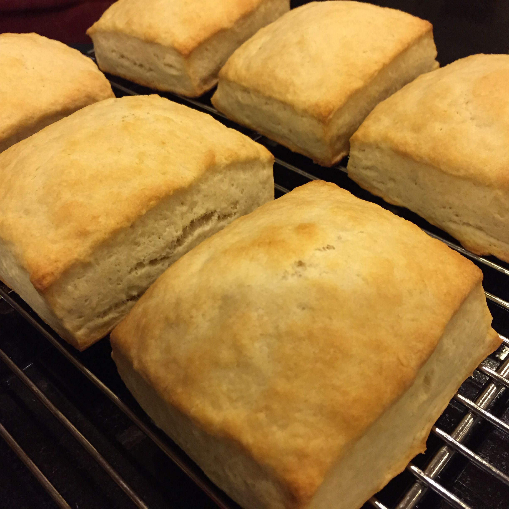

REASONS TO CUT YOUR BUTTERMILK BISCUITS IN RECTANGLES INSTEAD OF CIRCLES
It took me way too many years to figure this out.
-

They look great.
LOOK AT THEM.
-
They taste the same.
Actually better because they have corners, which are the ambrosia of baked things.
-
It is way easier.
Really, just use a pizza wheel or a big knife.
-
You lose less to waste.
You still have to trim the edges before you cut or they won't rise well but you keep all those perfectly usable in-between bits.
-
No re-rolling (and requisite lumpy seconds)
You can't really re-roll biscuit dough but you try to every time because all that waste enrages you. Free yourself from the tyranny of the round.
-
It's easier to fold fried egg into a rectangle than a circle.
Of course the primary purpose of a biscuit is an egg sandwich. It is finals week for my girls after all.
-
They make you look crafty.
Can't you just see this on Pinterest or whatever?
-
You don't need to own a stupid biscuit cutter.
I have no idea where mine is. And I don't care anymore.